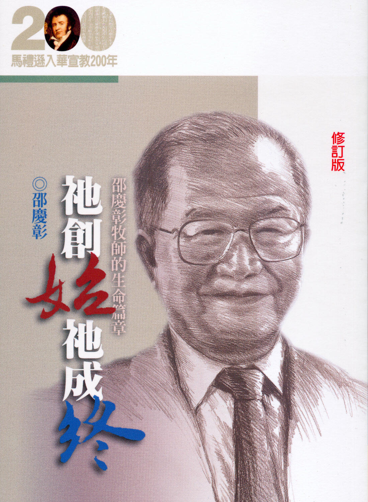
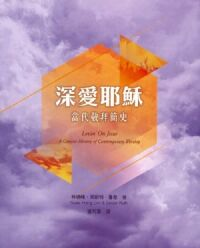

|
|
【我深愛耶穌】
詩集：世紀頌讚，342 |
|
|
我要相信，我要相信，相信主耶穌，
耶穌，祂就是我所愛的主，
祂為我釘死，救贖我生命，
耶穌，祂就是我相信的主。
我要接受，我要接受，接受主耶穌，
接受祂成為我個人救主，
一生跟隨祂，跟隨祂到底，
耶穌，祂就是我個人救主。
我要深深，我要深深，深深愛耶穌，
耶穌，祂就是我深愛的主，
信靠祂到底，順服祂到底，
耶穌，祂就是我深愛的主。
|
|
|
|
|
|
|

邵慶彰牧師是菲律賓華人教會中深具影響的傳道人，對華人教會的貢獻斐然。
筆者以歲月沉澱後的平實穩健，鋪陳出不凡的生活歷練；以其敏感受教的心，在平凡的生活中有深沉的體認和學習，其生命所蘊含的智慧無形中帶給讀者極大的震撼。
用心讀本書，可以為讀者開啟另一扇心靈之窗，導引讀者進入更豐盛的生命。
|
|
【作者簡介】
邵慶彰
一九一七年生於廈門鼓浪嶼，高中時期受宋尚節博士呼召，自願奉獻為傳道。
福建協和大學畢業後任教於培元中學，與吳勇長老共事。一九四七年結婚後至菲律賓任職，繼而赴美西方神學院攻讀神學。一九五三年返菲，於納卯教會任牧職，一九六四年轉往菲律賓中華基督教會牧會，一九八七年底退休。
|

Lovin’ On Jesus: A Concise History of Contemporary Worship
出版社：基督教文藝
作者：林瑞峰、萊斯特．魯思 (Swee
Hong Lim, Lester Ruth)
譯者：區可茵
追溯當代基督教敬拜的起源和發展，條理分明地徹底探索各樣可能，以史學研究一手資料，豐富當代敬拜研究資源。
作者林瑞峰和萊斯特．魯思均為詹姆斯．懷特的學生，他們藉此書作為崇拜學經典著作《基督教崇拜導論》的必要補充，按該書的架構，填補了崇拜研究的重要空白。本書為當代敬拜此類主題的第一部學術專著，以史學方法研究早期錄音，並直接採訪參與早期當代敬拜的人，深入探尋當代基督教敬拜的起源和發展，其成果對基督教崇拜研究的學生和實踐者均有相當裨益，委實是所有敬拜主領的必備資源。
「《深愛耶穌》是以史學家的方法，由兩位作者直接訪問多位敬拜讚美運動歷史上舉足輕重的人物，蒐集一手的史料，從而有條不紊地以時間、空間、音樂、禱告、聖道和聖禮六個大題目來陳述敬拜讚美在這幾方面的流變。這書最可取之處，在於作者沒有褒或貶敬拜讚美運動，他們只是儘可能提供貼近實況的描述，讓讀者有據可依地作出評論。書中的注腳和參考資料也實可為研究敬拜讚美運動的莘莘學子的重要基石。我預計本書將成崇拜學的其中一本經典！」
——譚子舜牧師
中國基督教播道會恩福堂崇拜範疇主管
羅拔．韋柏崇拜研究學院博士
「馬丁路德說：『音樂的地位僅次於神學（聖道）。』此反映音樂在基督教信仰中地位相當高。傳統的聖詩和現代的敬拜讚美詩歌同樣可以讚頌上主，同樣帶着上主的能力，使人的生命大得盼望，倚靠上主的恩典邁步向前。《深愛耶穌》由當代敬拜的起源入手，最後以當代敬拜的未來作結，內容豐富，毫不乏味，帶領讀者從一九六零年代穿梭至今，探究和認識敬拜的轉變，是講述當代敬拜歷史難得一見的優良讀本。」
——姜樂雯牧師
香港路德會沐靈堂及牧民堂牧師
Grace Music Production 總監
「『歷史』二字或使某些人馬上想起沉悶、難記、繁複，甚或不夠『實用』而將之忽略；『當代』則只讓人想起『此時此刻』，難以與過去相連；難怪許多人都誤會『當代敬拜的歷史』無關重要、毋須理會。無可否認，當代敬拜的出版多集中於相對『實用』（或說『實在』）的手冊或工具，但我在此呼籲真正認真探求及努力實踐當代敬拜、對教會敬拜發展有承擔，以及想要透過更新敬拜模式使教會增長的各位，請務必用心仔細閱讀此書，你定必發現上帝將透過眾前人的經驗向你說話，讓你能為主獻上更美好的敬拜，更愛主；誠意推薦此書，讓我們共同承這一棒。」
——高國雄牧師
中華基督教會梁發紀念禮拜堂牧師
作者簡介
林瑞峰（Swee Hong
Lim），加拿大維多利亞大學（附屬多倫多大學）以馬內利書院鹿園教席聖樂副教授及聖樂碩士課程主任。亦曾美國德克薩斯州貝勒大學及新加坡三一神學院任教。教學工作外，林氏同時為美國及加拿大聖詩會之研究總監，並聯合衞理公會及加拿大聯合教會的聖詩委員會成員，為兩部聖詩本評審新歌。堑006年至2011年期間，林氏擔任世界循道衞理宗協會的崇拜和禮儀委員會主席，並於南非德班舉行的第十屆循道衞理奈協會會議負責設計崇拜儀節。其後在2011年至2013年，林氏於韓國釜山舉行的普世教會協會第十屆大會擔任敬拜組主席。除發表有關崇拜處境化及聖樂創作之學術研究外，林瑞峰亦為作曲家，他的作品獲收錄於不同宗挀之聖詩本。林氏現正與萊斯特．魯思合作，研究當代敬拜的音樂創作過程，新書期望於2021年出版。
萊斯特．魯思（Lester
Ruth），於聖母大學取得崇拜學博士學位，是美國北卡羅來納州杜克大學杜克神學院的基督教崇拜研究教授，亦曾於阿斯伯利神學院及耶魯大學神學院執教。在全職教學前，他曾於聯合衞理公會擔任牧師。他就崇拜歷史對現代敬拜的影響的議題深感興趣，所發表的學術論文多以初期基督教會或福音派教會的崇拜歷史為主軸，先後發表Worship
with the Anaheim Vineyard: The Emergence of Contemporary
Worship及《深愛耶穌：當代敬拜簡史》。魯思現正研究當代敬拜讚美的歷史，並與林瑞峰共同執筆，預期於2021年出版一本更詳細分析當代敬拜歷史的新書，亦有興趣深化崇拜詩歌中的聖經及神學元素。
https://www.logos.com.hk/bf/acms/content.asp?site=logosbf&op=show&type=product&code=9789622946767